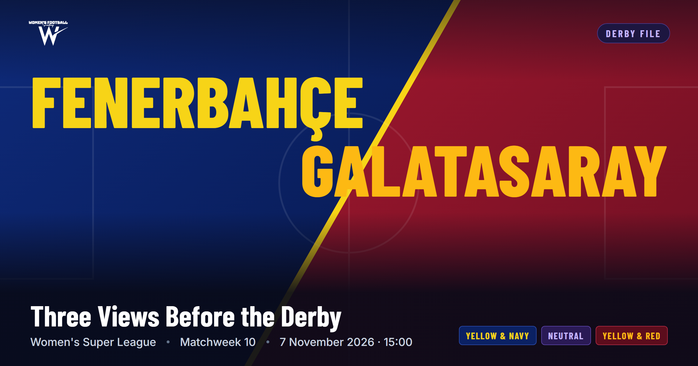
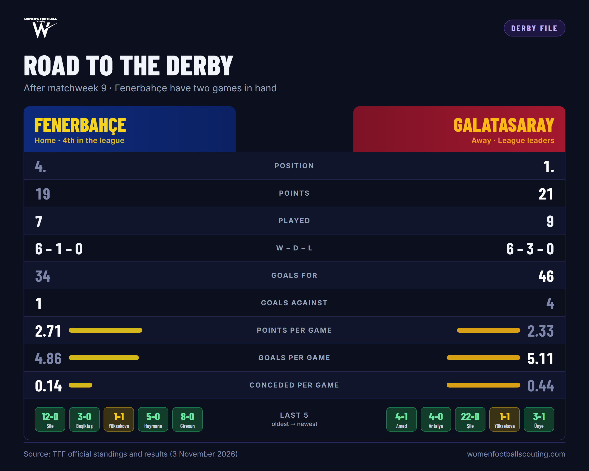
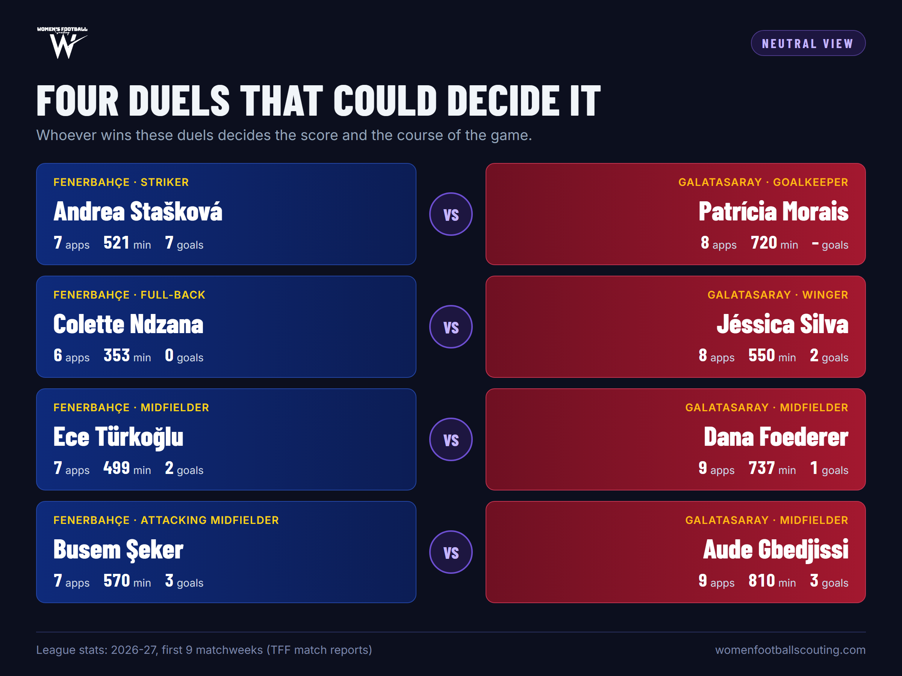
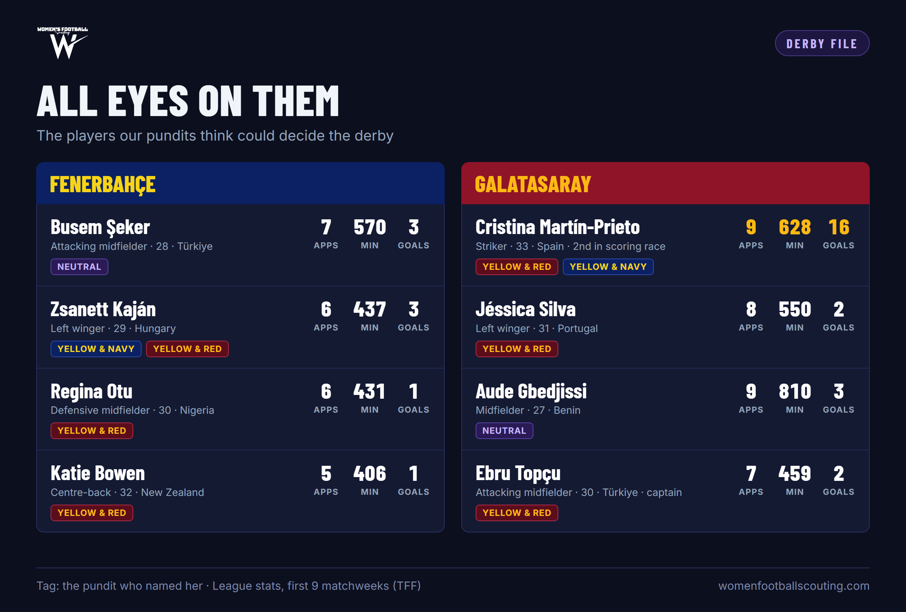

Three Views Before the Derby: Fenerbahçe vs Galatasaray
Two of the league's unbeaten sides meet at Dereağzı on Saturday. We asked three pundits for their take: one watches through yellow-and-navy eyes, one through yellow-and-red, and one through the two teams' playing identities.

The biggest game of matchweek 10 in the Turkish Women's Super League kicks off at 15:00 on Saturday. Galatasaray, unbeaten in nine games, top the table with 21 points. Fenerbahçe have two games in hand: they have taken 19 points from seven matches and conceded just one goal. If they win those games in hand they can reach 25, so this game will shape the title race in the first half of the season.
Heading into the derby we put questions to three pundits, built around the same themes but shaped by each one's perspective: the atmosphere, current form, tactical set-up, key players, scenarios and a score prediction. At the end, in the Data Desk, you'll find predicted line-ups, six animated scenarios and each team's strengths and weaknesses, all built from the site's data.
About our pundits
All three asked not to be named, so we introduce them by the lens through which they watch the game.
View on Instagram: @kadinfutbolfb
View on Instagram: @kadinfutbolgs

Neutral View
Reads the derby through the teams' playing identities, the key duels and the moments that could turn the game.
Two of the league's unbeaten sides meet. How much does this derby weigh in the title race?
The winner will very clearly be the team that carries its momentum to the end of the first half of the season. If Galatasaray win, the cards get reshuffled. If Fenerbahçe win, provided they also win their games in hand, they will have opened up a serious gap in the race.
Galatasaray lead on 21 points, Fenerbahçe are on 19 with two games in hand. How will the table shape each side's approach: who takes risks, who waits?
Whatever the score, both teams will take a big risk between the 55th and 75th minutes. But Galatasaray will be the more attacking side, because their playing identity and player roles are not built around waiting and defending.
Comparing the two teams' identities, in which zone or which match-up will the game be won?
Both teams share the principle of playing a possession game by stretching the pitch. So we will see a game packed with lateral passing, with wide players drifting inside and central players drifting out to the touchline. There are four key match-ups: Andrea Stašková vs Patrícia Morais, Jéssica Silva vs Colette Ndzana, Ece Türkoğlu vs Dana Foederer, and Busem Şeker vs Aude Gbedjissi. Whoever wins these duels decides the score and the course of the game. And the coach who solves the problem with an early change in these duels becomes the league's ambassador.

Name the two players, one from each side, who could be the deciding factor.
Aude Gbedjissi for Galatasaray, Busem Şeker for Fenerbahçe.
Given the formations the two head coaches are likely to choose, in which part of the pitch do you expect the tactical battle for control?
It's clear that both teams have weaknesses defending wide areas. The flanks, put simply the full-backs' defensive frailties, carry serious risk, especially in defensive transitions. That's because neither team's full-backs have a natural full-back's skill set, and here Galatasaray are a notch behind. On the other hand, neither team's wide attackers are touchline runners; both play a game that relies heavily on support from their full-backs. Reading the game that way, I think the battle will be heavily concentrated in the centre and will often lock up. But the moment play piles up on the flanks, the one-on-one duels will be both easy on the eye and a problem for one of the teams. In those moments, the more focused player in that position will make the difference for her team.
In key games like a derby, set pieces have a huge effect on the score in women's football. How do you compare the two teams' set-piece routines and marking strategies?
Neither team has yet played a league game in which they needed set pieces, because both have played games they dominated, and that is their general principle. But in this game it's Galatasaray who need the points. Fenerbahçe will again want to have the ball, but they'll put their weight into the game with a calmer approach. In that context, I think Fenerbahçe will have worked more on set-piece routines and will try harder than Galatasaray to score from them.
Against the high press Fenerbahçe may set up, how should Galatasaray manage the risk and reward of building from the back?
I actually think it's Galatasaray who will do most of the pressing, because they have to get a result and they'll be the attacking side in this game. The real risk is for Fenerbahçe: we saw in their European games that Fenerbahçe can't cope with a high press and their rate of simple mistakes goes up. That makes the link play between the centre-backs and central midfielders important, and Fenerbahçe aren't good at that either; they prefer to open the game up quickly with long balls to the flanks. So I think the real high press will come from Galatasaray, and seeing a good chance of success, they'll bring it onto the pitch from the first minute.
After the 60th minute, teams' stamina and endurance problems show and the lines stretch. With that in mind, which team do you expect to stay more disciplined in transition defence late in the second half?
That will depend on the starting line-ups chosen; we'll see whether a team keeps a super sub, a game-changer, on the bench. But I can say this: every team in Türkiye, even the national teams, fails the test on stamina and endurance by European standards. The players who understand this best are those who developed in Türkiye and then moved to a club abroad; they notice it in their first training session. This is one of the key points of this derby. It's hard to predict which team will tire early or which will be more cautious. But in a game that I think will get harder, faster and more intense between the 55th and 75th minutes, whoever doesn't fade at the 75th minute, or whoever can bring on more resilient players, will be closest to winning.
If there's an early goal, or the score stays level for a long time, what kind of game will we see? What's your score prediction?
An early goal is very unlikely. But if it comes, its echo will show in both teams as intense high pressing and a desire to keep the ball. If Galatasaray go ahead early, Fenerbahçe will press high. If Fenerbahçe go ahead early, they will drop back psychologically and Galatasaray will build far more intense attacks. My prediction: 1-2, Galatasaray win.
Yellow & Navy View
Our pundit who follows Fenerbahçe closely assesses the hosts' plan, weaknesses and approach to the derby.
How is the derby mood on the Fenerbahçe side? How decisive will home advantage and the crowd be?
I think both teams will want to prove who the best team in the league is. For Fenerbahçe in particular, with a European game coming up, I sense a strong desire not to lose. Playing where you're used to, where you train every day, is of course an advantage. And the crowd will be a source of motivation for both sides.
Fenerbahçe have conceded just one goal in seven games and have two games in hand. How do you explain their current form and this defensive consistency?
I put this performance down to the coach and to consistency in the way they play. The team has certain weaknesses, but they find ways to bring their strengths to the fore.
What should Fenerbahçe's plan be against Galatasaray's attacking power? What are the team's strengths and weaknesses?
In my view, Fenerbahçe have two big weaknesses for a game like this. The team can struggle defensively on the flanks. And in attacking transitions they lack a quick player who can carry the ball. The plan could be a highly focused, physical defensive approach that stops the ball from reaching their forwards.
Who could be Fenerbahçe's star of the match, and why?
Zsanett Kaján. I think she's the player most likely to pull a rabbit out of the hat in attack.
What kind of shop window is this derby for players who perform? Is there anyone who could make a name for herself here?
A player who scores or performs well in the derby will of course get a big shop window. Prieto, with the quality of her finishing, is in line to become a talking point across the country.
How will the game unfold? What's your score prediction?
Honestly, I expect a somewhat controlled game from Fenerbahçe. I predict Galatasaray will press high, trying to force their opponents into mistakes and find a goal. Fenerbahçe, though, are now experienced enough as a team not to fall into that trap. I expect a 0-0 draw.
Yellow & Red View
Our pundit who follows Galatasaray closely explains the leaders' trump cards, gaps and the derby scenario away from home.
What's the mood on the Galatasaray side going into derby week? How do you see this game's contribution to interest in women's football?
Frankly, it's hard to say much interest has built up, either in the national press or across the wider fan base; the absence of any supporter group planning to travel, or a club board thinking of organising it, shows as much. Of course, the game being streamed on the federation's YouTube channel means the algorithm's targeted recommendations will put it in front of a lot of people, and it will have a noticeable echo on social media. But that also depends on how the game goes and the stories it produces. On the other hand, I don't think the concentration of the Galatasaray camp, especially the players and the coaching staff, will slip for a moment. The wounds suffered in the league so far and the size of the fixture will lock the team into the game.
Galatasaray are unbeaten in nine, with 46 goals scored and only four conceded. But there have been slip-ups, like the 1-1 at Yüksekova. How do you assess the team's current form?
Frankly, the team tends to move forward on individual talent and an urge to force the game as much as possible. Both the squad's overall ceiling and head coach Şaban Uzun's philosophy play a big part in that. The idea is: the more chances we create, the more xG we produce, the better we settle in the opponent's half and the more often we find the ball in the box, the better. That produces an appetite for a ping-pong-like tempo that takes serious risks and sometimes even leaves the centre empty. You have to accept that form has been inconsistent. Even so, when it comes to the derby, it doesn't strike me as a decisive factor.
What is Galatasaray's biggest trump card against Fenerbahçe, and where are they most likely to be exposed?
I think the biggest trump card is the potential of the wingers to dominate their individual duels, which will in turn limit how much Fenerbahçe's full-backs can join the attack. Despite playing at home, a Fenerbahçe side that accepts the game in its own half could feel the pressure and become more prone to mistakes. If Galatasaray convert the chances they get, they have more than enough potential to break the game open. On the other hand, Fenerbahçe have a general like Regina Otu at the heart of the game. Against Otu, defending a wide area and running the game, there will very probably be moments when Chang Jang's work rate won't be enough. Galatasaray's most critical weakness, though, is that neither full-back is a natural full-back, which leads to positional lapses in defence. I think Kaján will exploit those areas. Another weakness is Galatasaray's habit this season of conceding between the 70th and 90th minutes.
Who could decide the game for Galatasaray, and why?
Galatasaray had such a transfer window that there's no shortage of players expected to deliver something special in this game. First among them is Jéssica Silva, with her unstoppable explosive power. I think she'll go the extra mile to show she's a big-game player and why she came here. Prieto, on course for the golden boot, has the experience to know that a single goal here is worth far more. But these games are about balance. At a set piece or in a moment of space, the mid- and long-range shooting of a captain like Ebru Topçu is always a candidate to unlock the game.
How will playing away, the crowd and the pressure of defending top spot affect Galatasaray? Is a draw a bad result for Galatasaray?
Frankly, in the short history of this derby, Galatasaray have never even had the upper hand in a game at these facilities, let alone won one. In that light, you have to say both the crowd and the artificial turf will certainly weigh on the players. If we accept that Fenerbahçe, with two games in hand, are the real leaders, then a draw is, in my view, a bad result. Because the yellow-and-reds would spend the rest of the season waiting for Fenerbahçe to slip up, with no chance to change things themselves until the home derby. Going out with an all-out-win mentality will also be one of the main factors shaping the game.
How will the game unfold? What's your score prediction?
This is a true "who's the best" game. In games like this you usually see the teams size each other up first, then the physicality rises as far as the referee allows. I expect one team to take control and go looking for a goal, and if they don't find it, the game will settle back into a balance. High pressing and the desire for possession will give each team spells of dominance, but in my scenario the first goal comes at an unexpected moment. My score prediction rests on the idea that whoever scores first is strong enough to lock the game at 1-0. The leadership of Katie Bowen for Fenerbahçe and Jéssica Silva for Galatasaray could turn this derby, for the first time, into a power struggle where the foreign players take centre stage over the locals.

Three Views, Three Predictions
The predictions diverge: one goalless draw, one game locked by a single goal, one Galatasaray win.
Expects Galatasaray to win away. Sees an early goal as very unlikely; the decisive spell is minutes 55-75.
Expects a controlled Fenerbahçe and a Galatasaray side pressing high to force mistakes.
Thinks whoever scores first is strong enough to lock the game at 1-0.
The derby through the site's data
This section comes from the site's database, not our pundits: TFF match reports (starting XIs, minutes, goals, cards) and our scouting team's player grades. Grade scale: A+ highest, then AA, AB, BB, BC, CC, CD, DD, DE, EE; FF lowest.
Predicted line-ups
The TFF doesn't publish formations. We built them from the scouting team's position data and our Neutral pundit's match-ups. The letters in each circle are the player's overall scouting grade.
Why this XI: The core comes from the big games: against FOMGET (2-0), away at Beşiktaş (3-0) and away at Yüksekova (1-1), all seven of Munteanu, Bowen, Otu, Busem, Türkoğlu, Kaján and Stašková started. We expect Busem at right-back (her secondary position in our scouting data is right wing-back) with Maria Alves ahead of her on the right wing. Bowen moves to left centre-back, with Konya Plummer on the right (she started away at Yüksekova).
The three question marks: This XI has nine foreign players, one over the limit. One of three changes is expected: İpek Kaya for Plummer, Peritan Bozdağ for Abideen, or Fatma Şakar at left-back for Ndzana.
Why this XI: The season's most consistent names: Gbedjissi, Foederer and Pekel have started all nine games, Morais and Karataş every one of the eight they played. The third midfield spot is the least certain; as our Yellow & Red pundit suggested, we went with Chang Jang.
Alternatives: Keskin didn't play in matchweek 9; if she's out, İrem Eren (started in matchweek 9) at right-back. Oliwia Domin instead of Chang Jang, or Melike Öztürk (6 starts) as a second striker.
After Fenerbahçe's change, the two teams will start with 15 foreign players between them (Fenerbahçe 8, Galatasaray 7). Our Yellow & Red pundit's line about "a power struggle where the foreign players take centre stage over the locals" shows in the line-ups too.
Six scenarios, animated
Pick a scenario from A to F and press Play. Fenerbahçe in navy, Galatasaray in red; the player with the purple ring is the focus of the scenario. The goal at the top changes with each scenario, as labelled at the bottom. Scenarios are built from scouting grades and match reports, not tracking data; they are illustrations.
A
Jéssica Silva vs Colette Ndzana
The highest-rated player in either XI, one against one.
Kaján in behind Keskin
The space left by a winger playing at full-back.
If Galatasaray press
Munteanu's short game is weak; the way out is the long ball.
Busem Şeker vs Aude Gbedjissi
The same gap on the other flank, this time from the right.
Set piece, second ball
Ebru Topçu waiting for the clearance.
Last 15 minutes
Fenerbahçe's bench against Galatasaray's final quarter.
Fenerbahçe: Mu Munteanu, Bş Busem Şeker, Pl Plummer, Bo Bowen, Nd Ndzana, Ot Otu, Tü Türkoğlu, Al Alves, St Stašková, Kj Kaján, Ur Uraz.
Galatasaray: Mo Morais, Ke Keskin, Kr Karataş, Co Costa, Gb Gbedjissi, Fo Foederer, Ch Chang Jang, To Topçu, Si Silva, Pe Pekel, Pr Prieto.
Strengths and weaknesses
Shutting the door
Just one goal conceded in seven games (44', away at Yüksekova). At the back is the highest-rated centre-back on either side, Bowen (BB), with Otu in front of her.
1 goal / 7 games · Bowen: Marking AB, Anticipation AA, Leadership AB · Otu: Strength AB, Marking BB
A second-half team
22 of their 34 goals came in the second half, 9 after the 75th minute. The longer the game goes, the stronger Fenerbahçe get.
1st half 12 goals · 2nd half 22 goals · 10 goals between 61-75
A deep bench
14 goals came from substitutes; 15 different players have scored. The equaliser at Yüksekova also came off the bench (Yağmur Uraz, 79').
From the bench 14 / 34 · Alayont 3 · Stašková, Kaján and Busem 2 each · Türkoğlu, Abideen, Kerimoğlu and Uraz 1 each
Unbeaten in the big games
Won both games against the teams near the top without conceding. And they rarely get booked.
FOMGET 2-0, away at Beşiktaş 3-0 · 3 yellow cards in 7 games
The keeper's footwork
Munteanu's grade for short distribution with her feet is DD. If Galatasaray press, playing out short is risky; the way out is a throw or a long kick.
Munteanu: Short Distribution (Feet) DD, First Touch CD · Throwing BC, Kicking BC
Centre-back pace
Both centre-backs are slow. Balls in behind and Jéssica Silva cutting in from the line are dangerous.
Bowen: Pace CD · Plummer: Pace DE, Acceleration CD · Silva: Acceleration AA, Pace AB
Defending the flanks
Our Yellow & Navy pundit said it too: there are problems defending the flanks. Busem, at right-back, is really a midfielder; a mirror of Galatasaray's full-back issue.
Busem: Positioning DD, Tackling DD · Ndzana: Marking CD, Strength CD · Ndzana scouting note: weak in static 1v1 duels
Slow starts, little creativity in midfield
Only 6 goals in the first 30 minutes. Vision is limited in the centre; creativity falls to Kaján.
First 30 min: 6 goals · Vision: Otu CD, Türkoğlu CD, Abideen DD · Kaján BB
Early strikes
26 of their 46 goals came in the first half, 15 in the first 30 minutes. Galatasaray try to put games to bed early.
1-15: 9 goals · 31-45: 11 goals · 1st half 26 / 46
Prieto
Second in the scoring race with 16 goals (the leader has 17). She scores every 39 minutes; a third of Galatasaray's goals are hers.
16 / 46 goals · Finishing AB, Heading BB (3 headed goals), Composure BB
One against one on the wings
Jéssica Silva has the highest overall grade in either XI. Gbedjissi, playing at left-back, has a Pace grade of AA.
Silva: overall AB, First Touch AA, Acceleration AA · Gbedjissi: Pace AA, Stamina AB
Goalkeeping and leadership
Morais and Costa bring both quality and leadership at the back. Unbeaten against the teams near the top.
Morais: overall BB, Communication AA, Command of Area AB · Costa: Leadership A+, Marking AB · vs top sides 1W 2D, 7-1
Full-backs who are really wingers
Our Yellow & Red pundit's biggest worry shows in the data too: both full-backs have weak defensive grades.
Keskin: Positioning DE, Marking DD, Strength EE · Gbedjissi: Positioning DE, Tackling DD
Slow centre-backs
Karataş and Costa have low acceleration grades. Runs from Kaján and from Busem overlapping at right-back will test this pair.
Karataş: Pace DE, Acceleration DD · Costa: Acceleration CD · Busem: Pace BB · Kaján: Acceleration BC
A second-half dip
Only 2 goals between the 61st and 75th minutes in nine games; 2 of the 4 goals conceded came after the 75th minute. All 16 of Prieto's goals came before the 57th minute.
61-75: 2 goals · conceded: 27', 39', 77', 86' · Prieto was off by the 61st minute in 4 of her 8 starts
Cards and defensive work
18 yellow cards in nine games: the referee's line matters in a derby. The wingers contribute little defensively.
18 yellows / 9 games (Fenerbahçe 3 / 7) · Pekel: Marking EE, Tackling EE · Silva: Marking DE
Data note: There is no passing, shooting, running or positional data. This section is based on the scouting team's attribute grades and TFF match reports (starting XIs, minutes, goal minutes, goal types, cards). Line-ups and scenarios are predictions; "teams near the top" means the top six after matchweek 9.
Team and player statistics cover the first nine matchweeks of 2026-27 (TFF official standings and match reports, 3 November 2026). Player positions and ages come from the Women's Football Scouting database. The pundits' views are their own. This is an English translation of the original Turkish article.